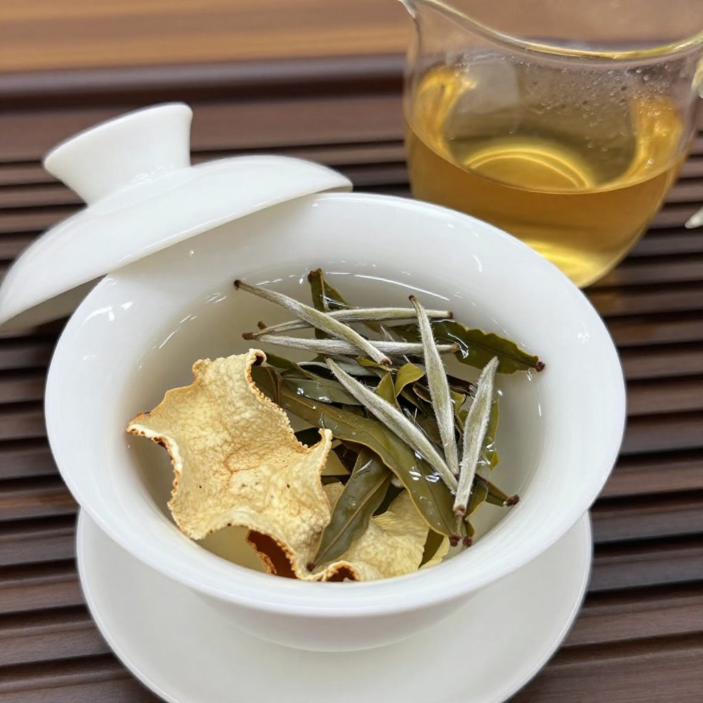
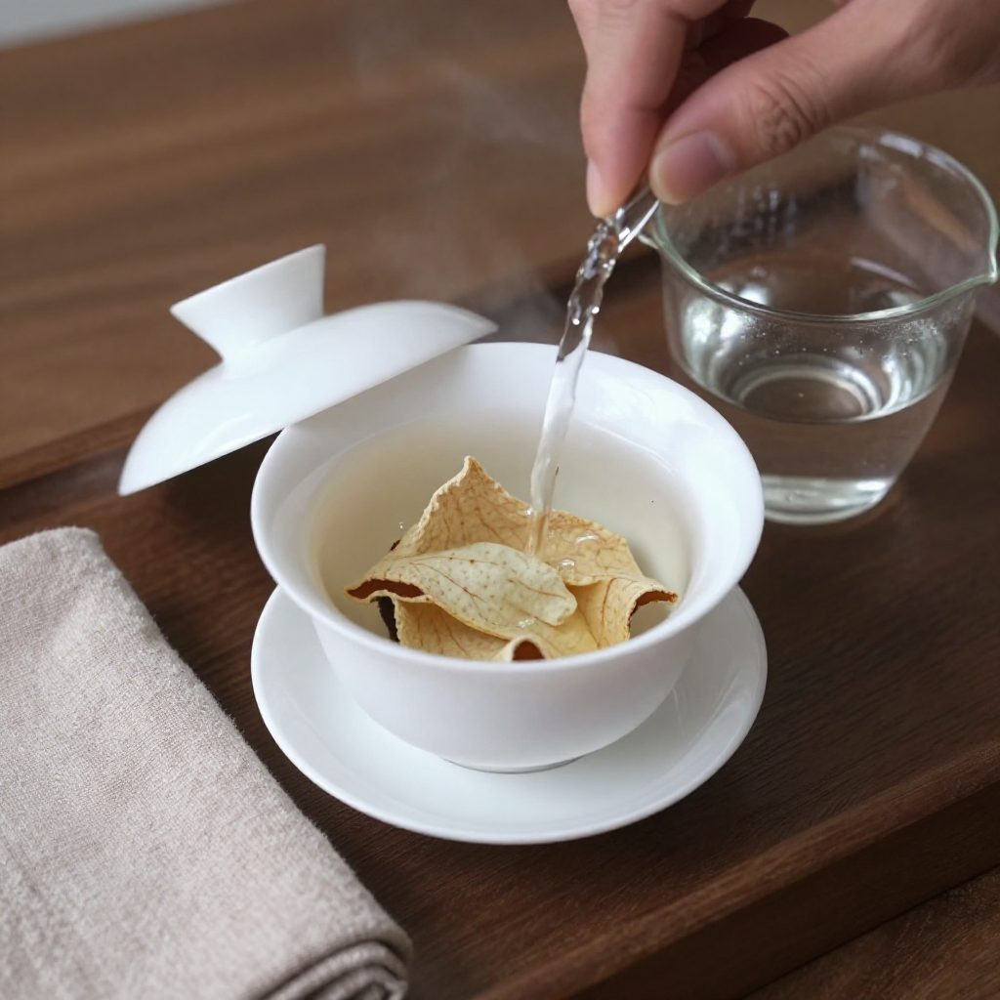
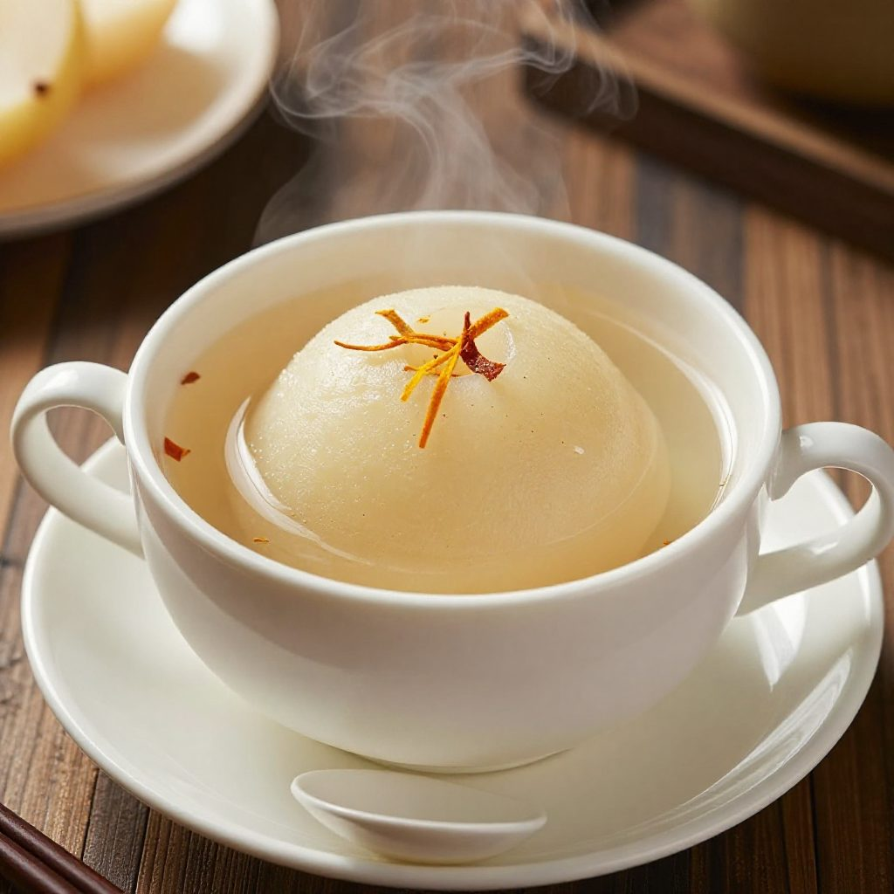
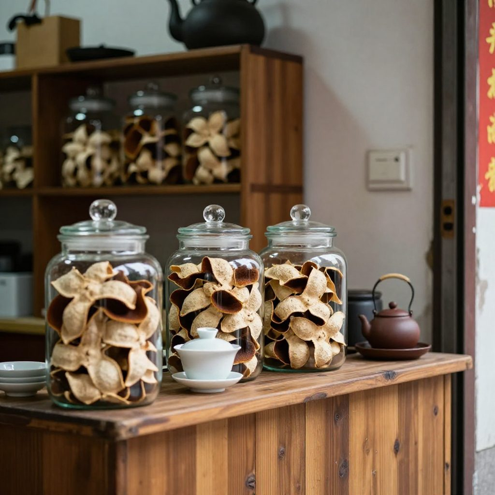

國慶剛過，這兩天打開手機，滿屏都是秋季養生茶飲：桂花釀、花茶定製、陳皮白茶，一個比一個火。長沙有家茶飲店，一杯桂花釀排起長隊。年輕人兜兜轉轉，還是喝回了老祖宗的東西。
巧的是，新會陳皮村南門牌坊G04這間小店，這幾天也天天有人來問泡法。銀洲湖的風一吹，滿屋陳香。這天下午，茶桌上就湊齊了一場現成的教學局——三個人，三種錯法，三種泡法。
一、張先生的三杯苦水：「你這三年皮是不是認生？」

張先生從廣州開車過來，一進門就把保溫杯往桌上一放，苦着臉。
「滢滢姐，你這三年皮是不是認生啊？怎麼到家泡出來又苦又澀？」
「張哥，你唔係買錯皮，係你嗰壺水太欺負新皮。」
原來張先生圖方便，直接一百度滾水，把三克新皮丟進大杯裡一悶就是十分鐘。新皮最嫩，柑果香正揚着，最怕燙——滾水加長時間悶泡，把苦澀全逼出來了。
二、九十度與十秒：新皮要「嫩養」

滢滢姐當場重泡給他看：取三克三年皮撕成小塊，配五克壽眉白茶。
第一步，醒皮。用九十度水快速洗一道，十秒就倒掉——這一步不是為了乾淨，是讓緊繃的皮先「醒」過來。
第二步，低沖。沿着蓋碗邊緣低沖水，不要直沖皮身。
第三步，快出。前三泡十五到二十秒就出湯。湯色一出來，清亮的蜜黃，張先生一喝，眼睛都亮了：清甜帶花香，哪有一點苦。
「同樣係嗰包皮，點解差咁遠？」
「皮冇變，係你由頭到尾都用錯水溫同時間。新皮要嫩養——低溫、快出、配白茶。」
三、王叔的老皮煮渾了：「老皮不是越煮越香嗎？」
正說着，王叔背着手進來了，手裡攥著一塊十年老皮，那是寶貝。他是江門本地老茶客，說話直。
「滢滢姐，老皮係咪越煮越香？我尋晚煮咗一壺，個湯點解渾嘅？」
滢滢姐把老皮拿起來一看就笑了——掰得太碎，碎末全在湯裡打滾。十年以上的老皮，早就沒了新皮的青氣，全是陳香、木質香和藥香，皮骨硬，得「請」出來，不能撕。
正確做法：整塊溫水沖洗醒一醒，放進小陶壺，冷水下壺，大火燒開轉小火煮五分鐘。老皮配熟普最合拍——三克皮配七克熟普，先泡後煮，十二泡還有味。
「對嘍，就是這個醫院門口都聞得到的藥香！」
四、李姐的雪梨湯發酸：用錯了年份

這邊還沒喝完，李姐帶着孩子來串門，說起家裡的煩心事。秋燥一來，孩子喉嚨乾癢，她學網上用陳皮燉雪梨，結果皮沒化，湯還發酸。
滢滢姐一聽就知道問題在哪：年份用錯了，而且燉太久。
家裡燉煮，要用五到八年的半老皮——那個年份最溫和，理氣不燥。做法是：皮先泡軟、刮掉內囊浮皮、撕成細絲；雪梨後下，燉三十分鐘就夠，久了酸味就出來了。
話音剛落，吳小姐從後廚端出一盅剛燉好的。陳皮的暖裹着雪梨的甜。
（抱着小碗咕咚咕咚喝光）「媽，呢個好飲！」
五、吳小姐那句「洗皮」：一個港客的教訓

吳小姐一邊收杯子一邊打趣：「姐，你一日要講八百遍洗皮，但客人十個有九個都偷懶。」
滢滢姐點點頭，這話真是教訓換來的。早年有位港客，買了上好的天馬產區老皮，回去沒洗沒醒，直接抓一大把悶進紫砂壺，第二天打來說沒香味。
滢滢姐後來才想明白：新會這地方，銀洲湖水汽重，三江交匯的鹹淡水養出來的茶枝柑，皮上帶着天然果油與歲月沉澱——第一泡一定是洗塵，不是喝，十秒倒掉，第二泡才是真香。偷懶省掉這一步，喝到的全是倉味和灰塵。
「你記住一句就夠：頭一泡係洗皮，唔係飲茶。」
常見問題
三年、五年、十年陳皮，投茶量有什麼區別？通用口訣是「皮三克起步」。新皮三克配五克白茶；半老皮三到四克配七克熟普或紅茶；十年老皮三克就能煮一壺，可續水十二泡。口味重可加到五克，但別貪多。
陳皮一定要洗嗎？第一泡能喝嗎？一定要洗。十秒快速洗皮醒皮，倒掉不喝，第二泡開始喝，又乾淨又香。老皮年份高，可以洗兩遍。
秋燥上火，陳皮配什麼最潤？配白茶、雪梨、胎菊最潤。店裡回頭率最高的是陳皮白茶與陳皮燉雪梨盅。
蓋碗、紫砂、煮茶壺怎麼選？三年新皮用蓋碗，聚香快出；五年半老用紫砂，保溫悶香；十年老皮用陶壺或玻璃煮茶壺，先泡後煮最出味。
在新會本地去哪買正宗陳皮？能試喝嗎？來新會陳皮村南門牌坊G04找滢滢姐，當面看皮、現場試喝，三年到十五年都有。外地朋友可先電話微信諮詢，支持郵寄試喝裝。
江門新會陳皮為什麼講究產區？核心產區如天馬、茶坑、東甲，位於銀洲湖畔、三江交匯處，鹹淡水交替，果香最足，陳化後藥香更濃，泡出來湯感完全不一樣。
結語：泡陳皮像跟老朋友聊天
夕陽落在陳皮村的曬場上，滢滢姐總結了三句話：三年新皮要嫩養，低溫快出配白茶；五年半老要哄着，溫水慢悶配熟普紅茶；十年老皮要熬着，好水細煮才出藥香。器具也講究——新皮用蓋碗保香，老皮用陶壺煮心。
「泡陳皮就像跟老朋友聊天，性子急了，燙着；性子冷了，悶着。只有不緊不慢，湯才會甜。」
銀洲湖的水、三江交匯的泥、新會的陽光和風，都藏在這一泡湯裡——泡對了，才對得起三年的等待、十年的守候。
想知道為什麼有人一夜間把新皮「催」成十年老皮，看這篇《虛標年份風波後，陳師傅在曬場摔了簸箕》；想知道一片皮從果園到櫃檯要經過幾個人的手，翻翻這篇《一片陳皮的江湖》。
下回預告：十年老皮煮完別急着扔！滢滢姐拿煮過的老皮煲出了一鍋讓整條街排隊的大骨湯——老茶客王叔都說絕，一皮三吃到底怎麼吃？下期手把手教你。